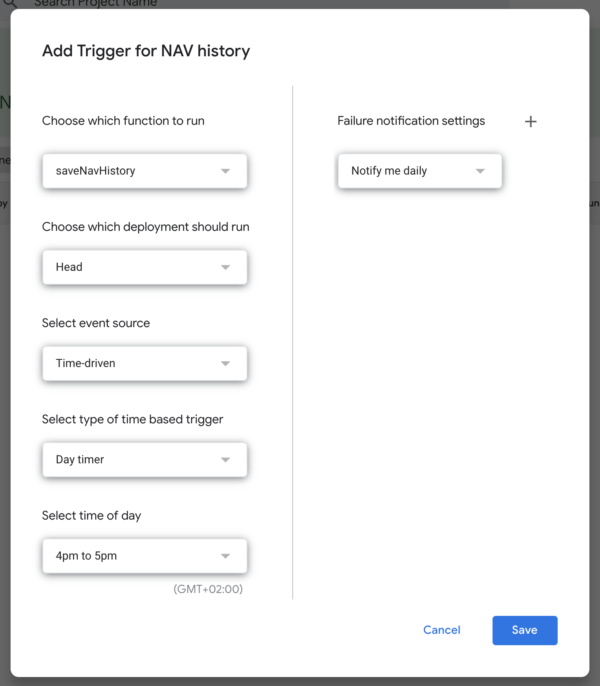

Automatize the saving of daily values for your fund or pension plan and avoid losing them after an update, using a time-triggered Google Apps Script function.
Note: This guide uses muFunds, a free Google Sheets addon that imports your asset data from Morningstar and other sources. We will assume that you've already installed muFunds and started using it in your spreadsheet.
The aim of this guide is to create a Google Apps Script function that will save the Net Asset Value (NAV) of our funds or pension plans, so we can have a history of these values for comparison or backtesting purposes in our own spreadsheet. Then, we will create a time-driven trigger of this function so it will be executed with a certain periodicity (e.g. every day).
To this extent, we will consider a Google Sheets spreadsheet with two sheets and a single fund: one sheet called Investments with our fund and its data (including the NAV provided by muFunds) and another one called History where we'll save the past NAVs of our fund. Of course, this can be easily extended to several funds as we'll explain later.
Example of fund position data in the Investments sheet, including current NAV (cell F2) and its date (cell H2), which...
...we want to save here, in the History sheet.
First we will implement the Google Apps Script function to save the NAV and its date from the Investments sheet to the History sheet. To do it, open the script editor from the upper menu (Tools > Script editor).
This could be a good starting point, which gathers data from a single fund (NAV from cell F2 and date from cell H2) and appends a new road in History with this date (parsed), the fund's ISIN and its NAV. Feel free to personalize it and test it manually as much as you want, by running it through the upper menu (Run > Run function > saveNavHistory):
function saveNavHistory() {
// Name of origin sheet (where current NAVs are)
var sheet1 = "Investments";
// Name of destination sheet (where historical NAVs will be saved)
var sheet2 = "History";
// Array of objects for each asset:
// - id: asset ISIN or ID
// - navCell: cell with NAV
// - dateCell: cell with date
var funds = [
{ isin: "LU0996182563", navCell: "F2", dateCell: "H2" },
// ...
];
var ss = SpreadsheetApp.getActiveSpreadsheet();
var s1 = ss.getSheetByName(sheet1);
var s2 = ss.getSheetByName(sheet2);
funds.forEach(function(fund) {
var date = s1.getRange(fund.dateCell).getValue();
var parsedDate = new Date(Date.parse(date));
var lastDate = s2.getRange(s2.getLastRow(), 1).getValue();
// Avoid inserting a NAV if we already have it
if(!(lastDate instanceof Date) || lastDate.getTime() !== parsedDate.getTime()) {
var nav = s1.getRange(fund.navCell).getValue();
s2.appendRow([ parsedDate, fund.isin, nav ]);
}
});
}
Once we have our function ready and tested, we will set up a time-based trigger to automatically execute our function with a certain periodicity. To do so, navigate via the upper menu to Edit > Current project's triggers. A new tab will open.
Then, create a new trigger by clicking Add Trigger at the lower right corner of the page. Choose the function you created (saveNavHistory) and select Time-driven as event source. As all funds and pension plans have a NAV which changes at most once a day, usually selecting a Day timer will be enough. Choose the time of the day in which you want the function to run if you have any preference. This would result in a configuration like this:

Just press Save and you're done! Your function will be triggered and will save your NAVs every day.